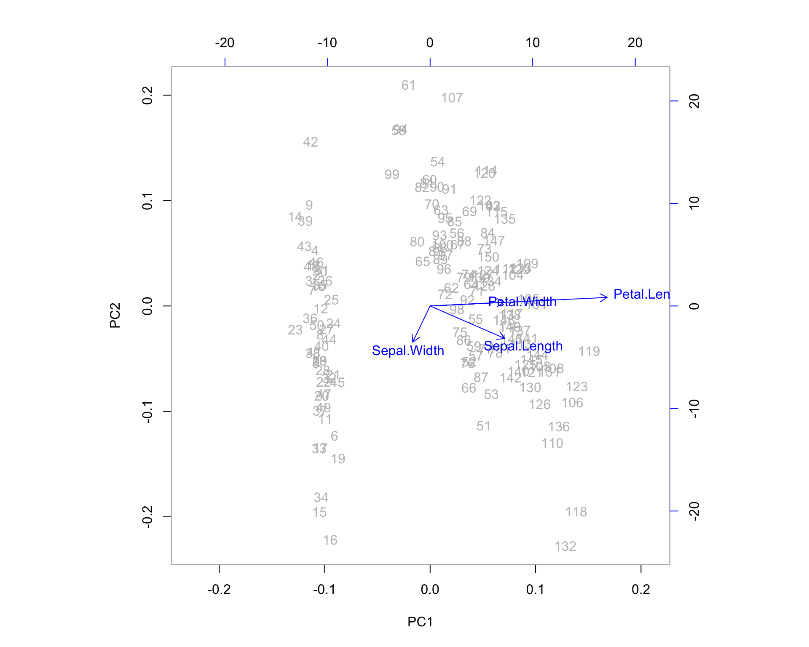
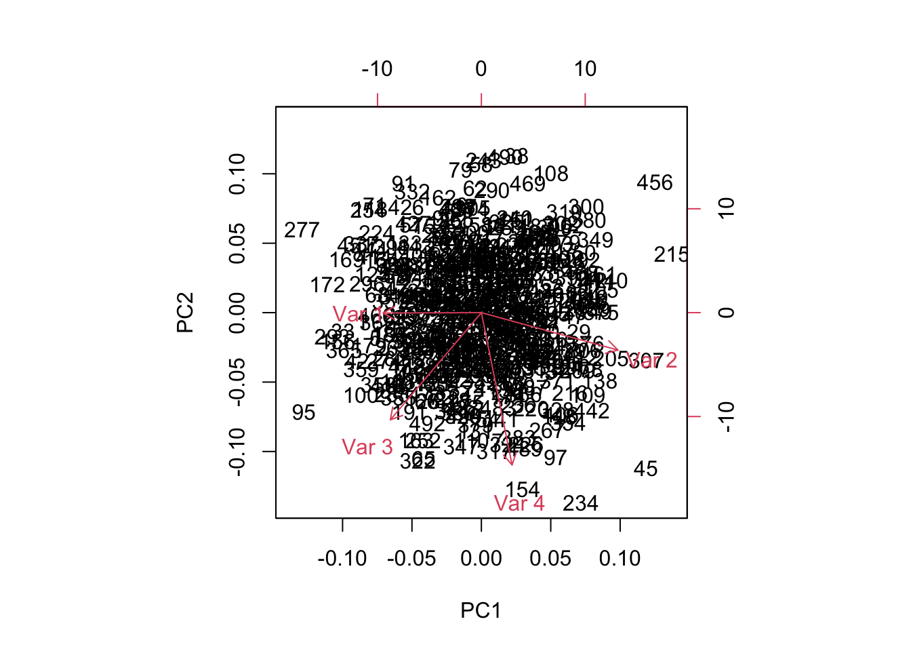

Chapter 13 Principal Components Analysis
We now have the tools necessary to discuss one of the most important concepts in mathematical statistics: Principal Components Analysis (PCA). Before we dive into the mathematical details, we’ll first introduce an effective analogy to develop our intuition.
13.1 God’s Flashlight
Imagine your data as a multidimensional cloud of points in space. God (however you conceive that) has a flashlight and can project this data at a right angle down onto a flat surface - the flashlight just casts a point shadow, the shadows don’t get bigger like on Earth. The center of the flat surface is fixed at the center of the data, so it’s more like 2 flashlights, one from below the surface, one from above, both at right angles. We could rotate this flashlight/flat surface setup around and get infinitely many projections of the data from different perspectives. The PCA projection is the one with the most variance, which indicates that it contains the most information from your original data. It’s also the projection that is closest to the original data in the Euclidean or sum-of-squared-error sense (PCA gives the rank k approximation to your data with the lowest possible error). Once projected, the axes of the projection (drawn so that the “first” axis points in the direction of greatest variance) are your principal components, providing the orthogonal directions of maximal variance.
This projection we’ve just described is actually the projection of the data onto a hyperplane, which entails a rank reduction of 1, though you might have imagined it as a projection onto a 2-dimensional plane. The great thing about PCA is that both of those visuals are appropriate - we can project the data onto any dimensional subspace of the original from 2 to rank(\(\X\))-1.
13.2 PCA Details
PCA involves the analysis of eigenvalues and eigenvectors of the covariance or the correlation matrix. Its development relies on the following important facts:
Theorem 13.1 (Diagonalization of Symmetric Matrices) All \(n\times n\) real valued symmetric matrices (like the covariance and correlation matrix) have two very important properties:
- They have a complete set of \(n\) linearly independent eigenvectors, \(\{\v_1,\dots,\v_n\}\), corresponding to eigenvalues \[\lambda_1 \geq \lambda_2 \geq\dots\geq \lambda_n.\]
- Furthermore, these eigenvectors can be always be chosen to be orthonormal so that if \(\V=[\v_1|\dots|\v_n]\) then \[\V^{T}\V=\bo{I}\] or equivalently, \(\V^{-1}=\V^{T}\).
Letting \(\D\) be a diagonal matrix with \(D_{ii}=\lambda_i\), by the definition of eigenvalues and eigenvectors we have for any symmetric matrix \(\bo{S}\), \[\bo{S}\V=\V\D\] Thus, any symmetric matrix \(\bo{S}\) can be diagonalized in the following way: \[\V^{T}\bo{S}\V=\D\] Covariance and Correlation matrices (when there is no perfect multicollinearity in variables) have the additional property that all of their eigenvalues are positive (nonzero). They are positive definite matrices.
Now that we know we have a complete set of eigenvectors, it is common to order them according to the magnitude of their corresponding eigenvalues. From here on out, we will use \((\lambda_1,\v_1)\) to represent the largest eigenvalue of a matrix and its corresponding eigenvector. When working with a covariance or correlation matrix, this eigenvector associated with the largest eigenvalue is called the first principal component and points in the direction for which the variance of the data is maximal. Example 13.1 illustrates this point.
Example 13.1 (Eigenvectors of the Covariance Matrix) Suppose we have a matrix of data for 10 individuals on 2 variables, \(\x_1\) and \(\x_2\). Plotted on a plane, the data appears as follows:

Our data matrix for these points is: \[\X=\pm 1 & 1\\2&1\\2&4\\3&1\\4&4\\5&2\\6&4\\6&6\\7&6\\8&8 \mp\] the means of the variables in \(\X\) are: \[\bar{\x}=\pm 4.4 \\ 3.7 \mp. \] When thinking about variance directions, our first step should be to center the data so that it has mean zero. Eigenvectors measure the spread of data around the origin. Variance measures spread of data around the mean. Thus, we need to equate the mean with the origin. To center the data, we simply compute \[\X_c=\X-\e\bar{\x}^T = \pm 1 & 1\\2&1\\2&4\\3&1\\4&4\\5&2\\6&4\\6&6\\7&6\\8&8 \mp - \pm 4.4 & 3.7 \\4.4 & 3.7 \\4.4 & 3.7 \\4.4 & 3.7 \\4.4 & 3.7 \\4.4 & 3.7 \\4.4 & 3.7 \\4.4 & 3.7 \\4.4 & 3.7 \\4.4 & 3.7 \mp = \pm -3.4&-2.7\\-2.4&-2.7\\-2.4& 0.3\\-1.4&-2.7\\ -0.4& 0.3\\0.6&-1.7\\1.6& 0.3\\1.6& 2.3\\2.6& 2.3\\3.6& 4.3\mp.\] Examining the new centered data, we find that we’ve only translated our data in the plane - we haven’t distorted it in any fashion.

Thus the covariance matrix is: \[\ssigma=\frac{1}{9}(\X_c^T\X_c)= \pm 5.6 & 4.8\\4.8&6.0111 \mp \] The eigenvalue and eigenvector pairs of \(\ssigma\) are (rounded to 2 decimal places) as follows: \[(\lambda_1,\v_1)=\left( 10.6100 , \begin{bmatrix} 0.69 \\ 0.72 \end{bmatrix}\right) \mbox{ and } (\lambda_2,\v_2)= \left( 1.0012,\begin{bmatrix}-0.72\\0.69 \end{bmatrix}\right)\] Let’s plot the eigenvector directions on the same graph:

The eigenvector \(\v_1\) is called the first principal component. It is the direction along which the variance of the data is maximal. The eigenvector \(\v_2\) is the second principal component. In general, the second principal component is the direction, orthogonal to the first, along which the variance of the data is maximal (in two dimensions, there is only one direction possible.)
Why is this important? Let’s consider what we’ve just done. We started with two variables, \(\x_1\) and \(\x_2\), which appeared to be correlated. We then derived new variables, \(\v_1\) and \(\v_2\), which are linear combinations of the original variables: \[\begin{eqnarray} \v_1 &=& 0.69\x_1 + 0.72\x_2 \\ \tag{13.1} \v_2 &=& -0.72\x_1 + 0.69\x_2 \end{eqnarray}\] These new variables are completely uncorrelated. To see this, let’s represent our data according to the new variables - i.e. let’s change the basis from \(\mathcal{B}_1=[\x_1,\x_2]\) to \(\mathcal{B}_2=[\v_1,\v_2]\).
Example 13.2 (The Principal Component Basis) Let’s express our data in the basis defined by the principal components. We want to find coordinates (in a \(2\times 10\) matrix \(\A\)) such that our original (centered) data can be expressed in terms of principal components. This is done by solving for \(\A\) in the following equation (see Chapter 8 and note that the rows of \(\X\) define the points rather than the columns): \[\begin{eqnarray} \X_c &=& \A \V^T \\ \pm -3.4&-2.7\\-2.4&-2.7\\-2.4& 0.3\\-1.4&-2.7\\ -0.4& 0.3\\0.6&-1.7\\1.6& 0.3\\1.6& 2.3\\2.6& 2.3\\3.6& 4.3 \mp &=& \pm a_{11} & a_{12} \\ a_{21} & a_{22} \\ a_{31} & a_{32}\\ a_{41} & a_{42}\\ a_{51} & a_{52}\\ a_{61} & a_{62}\\ a_{71} & a_{72}\\ a_{81} & a_{82}\\ a_{91} & a_{92}\\ a_{10,1} & a_{10,2} \mp \pm \v_1^T \\ \v_2^T \mp \end{eqnarray}\]
Conveniently, our new basis is orthonormal meaning that \(\V\) is an orthogonal matrix, so \[\A=\X\V .\] The new data coordinates reflect a simple rotation of the data around the origin:

Visually, we can see that the new variables are uncorrelated. You may wish to confirm this by calculating the covariance. In fact, we can do this in a general sense. If \(\A=\X_c\V\) is our new data, then the covariance matrix is diagonal: \[\begin{eqnarray*} \ssigma_A &=& \frac{1}{n-1}\A^T\A \\ &=& \frac{1}{n-1}(\X_c\V)^T(\X_c\V) \\ &=& \frac{1}{n-1}\V^T((\X_c^T\X_c)\V\\ &=&\frac{1}{n-1}\V^T((n-1)\ssigma_X)\V\\ &=&\V^T(\ssigma_X)\V\\ &=&\V^T(\V\D\V^T)\V\\ &=& \D \end{eqnarray*}\] Where \(\ssigma_X=\V\D\V^T\) comes from the diagonalization in Theorem 13.1. By changing our variables to principal components, we have managed to “hide” the correlation between \(\x_1\) and \(\x_2\) while keeping the spacial relationships between data points in tact. Transformation back to variables \(\x_1\) and \(\x_2\) is easily done by using the linear relationships in from Equation (13.1).
13.3 Geometrical comparison with Least Squares
In least squares regression, our objective is to maximize the amount of variance explained in our target variable. It may look as though the first principal component from Example 13.1 points in the direction of the regression line. This is not the case however. The first principal component points in the direction of a line which minimizes the sum of squared orthogonal distances between the points and the line. Regressing \(\x_2\) on \(\x_1\), on the other hand, provides a line which minimizes the sum of squared vertical distances between points and the line. This is illustrated in Figure 13.1.

Figure 13.1: Principal Components vs. Regression Lines
The first principal component about the mean of a set of points can be represented by that line which most closely approaches the data points. Let this not conjure up images of linear regression in your head, though. In contrast, linear least squares tries to minimize the distance in a single direction only (the direction of your target variable axes). Thus, although the two use a similar error metric, linear least squares is a method that treats one dimension of the data preferentially, while PCA treats all dimensions equally.
You might be tempted to conclude from Figure 13.1 that the first principal component and the regression line “ought to be similar.” This is a terrible conclusion if you consider a large multivariate dataset and the various regression lines that would predict each variable in that dataset. In PCA, there is no target variable and thus no single regression line that we’d be comparing to.
13.4 Covariance or Correlation Matrix?
Principal components analysis can involve eigenvectors of either the covariance matrix or the correlation matrix. When we perform this analysis on the covariance matrix, the geometric interpretation is simply centering the data and then determining the direction of maximal variance. When we perform this analysis on the correlation matrix, the interpretation is standardizing the data and then determining the direction of maximal variance. The correlation matrix is simply a scaled form of the covariance matrix. In general, these two methods give different results, especially when the scales of the variables are different.
The covariance matrix is the default for (most) \(\textsf{R}\) PCA functions. The correlation matrix is the default in SAS and the covariance matrix method is invoked by the option:
proc princomp data=X cov;
var x1--x10;
run;Choosing between the covariance and correlation matrix can sometimes pose problems. The rule of thumb is that the correlation matrix should be used when the scales of the variables vary greatly. In this case, the variables with the highest variance will dominate the first principal component. The argument against automatically using correlation matrices is that it turns out to be quite a brutal way of standardizing your data - forcing all variables to contain the same amount of information (after all, don’t we equate variance to information?) seems naive and counterintuitive when it is not absolutely necessary for differences in scale. We hope that the case studies outlined in Chapter 14 will give those who always use the correlation option reason for pause, and we hope that, in the future, they will consider multiple presentations of the data and their corresponding low-rank representations of the data.
13.5 PCA in R
Let’s find Principal Components using the iris dataset. This is a well-known dataset, often used to demonstrate the effect of clustering algorithms. It contains numeric measurements for 150 iris flowers along 4 dimensions. The fifth column in the dataset tells us what species of Iris the flower is. There are 3 species.
- Sepal.Length
- Sepal.Width
- Petal.Length
- Petal.Width
- Species
- Setosa
- Versicolor
- Virginica
Let’s first take a look at the scatterplot matrix:
pairs(~Sepal.Length+Sepal.Width+Petal.Length+Petal.Width,data=iris,col=c("red","green3","blue")[iris$Species])
It is apparent that some of our variables are correlated. We can confirm this by computing the correlation matrix with the cor() function. We can also check out the individual variances of the variables and the covariances between variables by examining the covariance matrix (cov() function). Remember - when looking at covariances, we can really only interpret the sign of the number and not the magnitude as we can with the correlations.
cor(iris[1:4])## Sepal.Length Sepal.Width Petal.Length Petal.Width
## Sepal.Length 1.0000000 -0.1175698 0.8717538 0.8179411
## Sepal.Width -0.1175698 1.0000000 -0.4284401 -0.3661259
## Petal.Length 0.8717538 -0.4284401 1.0000000 0.9628654
## Petal.Width 0.8179411 -0.3661259 0.9628654 1.0000000cov(iris[1:4])## Sepal.Length Sepal.Width Petal.Length Petal.Width
## Sepal.Length 0.6856935 -0.0424340 1.2743154 0.5162707
## Sepal.Width -0.0424340 0.1899794 -0.3296564 -0.1216394
## Petal.Length 1.2743154 -0.3296564 3.1162779 1.2956094
## Petal.Width 0.5162707 -0.1216394 1.2956094 0.5810063We have relatively strong positive correlation between Petal Length, Petal Width and Sepal Length. It is also clear that Petal Length has more than 3 times the variance of the other 3 variables. How will this effect our analysis?
The scatter plots and correlation matrix provide useful information, but they don’t give us a true sense for how the data looks when all 4 attributes are considered simultaneously.
In the next section we will compute the principal components directly from eigenvalues and eigenvectors of the covariance or correlation matrix. It’s important to note that this method of computing principal components is not actually recommended - the answer provided is the same, but the numerical stability and efficiency of this method may be dubious for large datasets. The Singular Value Decomposition (SVD), which will be discussed in Chapter 15, is generally a preferred route to computing principal components. Using both the covariance matrix and the correlation matrix, let’s see what we can learn about the data. Let’s start with the covariance matrix which is the default setting for the prcomp() function in R.
13.5.1 Covariance PCA
Let’s start with the covariance matrix which is the default setting for the prcomp function in R. It’s worth repeating that a dedicated principal component function like prcomp() is superior in numerical stability and efficiency to the lines of code in the next section. The only reason for directly computing the covariance matrix and its eigenvalues and eigenvectors (as opposed to prcomp()) is for edification. Computing a PCA in this manner, just this once, will help us grasp the exact mathematics of the situation and empower us to use built in functions with greater flexibility and understanding.
13.5.2 Principal Components, Loadings, and Variance Explained
covM = cov(iris[1:4])
eig=eigen(covM,symmetric=TRUE,only.values=FALSE)
c=colnames(iris[1:4])
eig$values## [1] 4.22824171 0.24267075 0.07820950 0.02383509rownames(eig$vectors)=c(colnames(iris[1:4]))
eig$vectors## [,1] [,2] [,3] [,4]
## Sepal.Length 0.36138659 -0.65658877 -0.58202985 0.3154872
## Sepal.Width -0.08452251 -0.73016143 0.59791083 -0.3197231
## Petal.Length 0.85667061 0.17337266 0.07623608 -0.4798390
## Petal.Width 0.35828920 0.07548102 0.54583143 0.7536574The eigenvalues tell us how much of the total variance in the data is directed along each eigenvector. Thus, the amount of variance along \(\mathbf{v}_1\) is \(\lambda_1\) and the proportion of variance explained by the first principal component is \[\frac{\lambda_1}{\lambda_1+\lambda_2+\lambda_3+\lambda_4}\]
eig$values[1]/sum(eig$values)## [1] 0.9246187Thus 92% of the variation in the Iris data is explained by the first component alone. What if we consider the first and second principal component directions? Using this two dimensional representation (approximation/projection) we can capture the following proportion of variance: \[\frac{\lambda_1+\lambda_2}{\lambda_1+\lambda_2+\lambda_3+\lambda_4}\]
sum(eig$values[1:2])/sum(eig$values)## [1] 0.9776852With two dimensions, we explain 97.8% of the variance in these 4 variables! The entries in each eigenvector are called the loadings of the variables on the component. The loadings give us an idea how important each variable is to each component. For example, it seems that the third variable in our dataset (Petal Length) is dominating the first principal component. This should not come as too much of a shock - that variable had (by far) the largest amount of variation of the four. In order to capture the most amount of variance in a single dimension, we should certainly be considering this variable strongly. The variable with the next largest variance, Sepal Length, dominates the second principal component.
Note: Had Petal Length and Sepal Length been correlated, they would not have dominated separate principal components, they would have shared one. These two variables are not correlated and thus their variation cannot be captured along the same direction.
13.5.3 Scores and PCA Projection
Lets plot the projection of the four-dimensional iris data onto the two dimensional space spanned by the first 2 principal components. To do this, we need coordinates. These coordinates are commonly called scores in statistical texts. We can find the coordinates of the data on the principal components by solving the system \[\mathbf{X}=\mathbf{A}\mathbf{V}^T\] where \(\mathbf{X}\) is our original iris data (centered to have mean = 0) and \(\mathbf{A}\) is a matrix of coordinates in the new principal component space, spanned by the eigenvectors in \(\mathbf{V}\).
Solving this system is simple enough - since \(\mathbf{V}\) is an orthogonal matrix. Let’s confirm this:
eig$vectors %*% t(eig$vectors)## Sepal.Length Sepal.Width Petal.Length Petal.Width
## Sepal.Length 1.000000e+00 4.163336e-17 -2.775558e-17 -2.775558e-17
## Sepal.Width 4.163336e-17 1.000000e+00 1.665335e-16 1.942890e-16
## Petal.Length -2.775558e-17 1.665335e-16 1.000000e+00 -2.220446e-16
## Petal.Width -2.775558e-17 1.942890e-16 -2.220446e-16 1.000000e+00t(eig$vectors) %*% eig$vectors## [,1] [,2] [,3] [,4]
## [1,] 1.000000e+00 -2.289835e-16 0.000000e+00 -1.110223e-16
## [2,] -2.289835e-16 1.000000e+00 2.775558e-17 -1.318390e-16
## [3,] 0.000000e+00 2.775558e-17 1.000000e+00 1.110223e-16
## [4,] -1.110223e-16 -1.318390e-16 1.110223e-16 1.000000e+00We’ll have to settle for precision at 15 decimal places. Close enough!
So to find the scores, we simply subtract the means from our original variables to create the data matrix \(\mathbf{X}\) and compute \[\mathbf{A}=\mathbf{X}\mathbf{V}\]
# The scale function centers and scales by default
X=scale(iris[1:4],center=TRUE,scale=FALSE)
# Create data.frame from matrix for plotting purposes.
scores=data.frame(X %*% eig$vectors)
# Change default variable names
colnames(scores)=c("Prin1","Prin2","Prin3","Prin4")
# Print coordinates/scores of first 10 observations
scores[1:10, ]## Prin1 Prin2 Prin3 Prin4
## 1 -2.684126 -0.31939725 -0.02791483 0.002262437
## 2 -2.714142 0.17700123 -0.21046427 0.099026550
## 3 -2.888991 0.14494943 0.01790026 0.019968390
## 4 -2.745343 0.31829898 0.03155937 -0.075575817
## 5 -2.728717 -0.32675451 0.09007924 -0.061258593
## 6 -2.280860 -0.74133045 0.16867766 -0.024200858
## 7 -2.820538 0.08946138 0.25789216 -0.048143106
## 8 -2.626145 -0.16338496 -0.02187932 -0.045297871
## 9 -2.886383 0.57831175 0.02075957 -0.026744736
## 10 -2.672756 0.11377425 -0.19763272 -0.056295401To this point, we have simply computed coordinates (scores) on a new set of axis (principal components, eigenvectors, loadings). These axis are orthogonal and are aligned with the directions of maximal variance in the data. When we consider only a subset of principal components (like 2 components accounting for 97% of the variance), then we are projecting the data onto a lower dimensional space. Generally, this is one of the primary goals of PCA: Project the data down into a lower dimensional space (onto the span of the principal components) while keeping the maximum amount of information (i.e. variance).
Thus, we know that almost 98% of the data’s variance can be seen in two-dimensions using the first two principal components. Let’s go ahead and see what this looks like:
plot(scores$Prin1, scores$Prin2,
main="Data Projected on First 2 Principal Components",
xlab="First Principal Component",
ylab="Second Principal Component",
col=c("red","green3","blue")[iris$Species])
13.5.4 PCA functions in R
irispca=prcomp(iris[1:4])
# Variance Explained
summary(irispca)## Importance of components:
## PC1 PC2 PC3 PC4
## Standard deviation 2.0563 0.49262 0.2797 0.15439
## Proportion of Variance 0.9246 0.05307 0.0171 0.00521
## Cumulative Proportion 0.9246 0.97769 0.9948 1.00000# Eigenvectors:
irispca$rotation## PC1 PC2 PC3 PC4
## Sepal.Length 0.36138659 -0.65658877 0.58202985 0.3154872
## Sepal.Width -0.08452251 -0.73016143 -0.59791083 -0.3197231
## Petal.Length 0.85667061 0.17337266 -0.07623608 -0.4798390
## Petal.Width 0.35828920 0.07548102 -0.54583143 0.7536574# Coordinates of first 10 observations along PCs:
irispca$x[1:10, ]## PC1 PC2 PC3 PC4
## [1,] -2.684126 -0.31939725 0.02791483 0.002262437
## [2,] -2.714142 0.17700123 0.21046427 0.099026550
## [3,] -2.888991 0.14494943 -0.01790026 0.019968390
## [4,] -2.745343 0.31829898 -0.03155937 -0.075575817
## [5,] -2.728717 -0.32675451 -0.09007924 -0.061258593
## [6,] -2.280860 -0.74133045 -0.16867766 -0.024200858
## [7,] -2.820538 0.08946138 -0.25789216 -0.048143106
## [8,] -2.626145 -0.16338496 0.02187932 -0.045297871
## [9,] -2.886383 0.57831175 -0.02075957 -0.026744736
## [10,] -2.672756 0.11377425 0.19763272 -0.056295401All of the information we computed using eigenvectors aligns with what we see here, except that the coordinates/scores and the loadings of Principal Component 3 are of the opposite sign. In light of what we know about eigenvectors representing directions, this should be no cause for alarm. The prcomp function arrived at the unit basis vector pointing in the negative direction of the one we found directly from the eig function - which should negate all the coordinates and leave us with an equivalent mirror image in all of our projections.
13.5.5 The Biplot
One additional feature that R users have created is the biplot. The PCA biplot allows us to see where our original variables fall in the space of the principal components. Highly correlated variables will fall along the same direction (or exactly opposite directions) as a change in one of these variables correlates to a change in the other. Uncorrelated variables will appear further apart. The length of the variable vectors on the biplot tell us the degree to which variability in variable is explained in that direction. Shorter vectors have less variability than longer vectors. So in the biplot below, petal width and petal length point in the same direction indicating that these variables share a relatively high degree of correlation. However, the vector for petal width is much shorter than that of petal length, which means you can expect a higher degree of change in petal length as you proceed to the right along PC1. PC1 explains more of the variance in petal length than it does petal width. If we were to imagine a third PC orthogonal to the plane shown, petal width is likely to exist at much larger angle off the plane - here, it is being projected down from that 3-dimensional picture.
biplot(irispca, col = c("gray", "blue"))
We can examine some of the outlying observations to see how they align with these projected variable directions. It helps to compare them to the quartiles of the data. Also keep in mind the direction of the arrows in the plot. If the arrow points down then the positive direction is down - indicating observations which are greater than the mean. Let’s pick out observations 42 and 132 and see what the actual data points look like in comparison to the rest of the sample population.
summary(iris[1:4])## Sepal.Length Sepal.Width Petal.Length Petal.Width
## Min. :4.300 Min. :2.000 Min. :1.000 Min. :0.100
## 1st Qu.:5.100 1st Qu.:2.800 1st Qu.:1.600 1st Qu.:0.300
## Median :5.800 Median :3.000 Median :4.350 Median :1.300
## Mean :5.843 Mean :3.057 Mean :3.758 Mean :1.199
## 3rd Qu.:6.400 3rd Qu.:3.300 3rd Qu.:5.100 3rd Qu.:1.800
## Max. :7.900 Max. :4.400 Max. :6.900 Max. :2.500# Consider orientation of outlying observations:
iris[42, ]## Sepal.Length Sepal.Width Petal.Length Petal.Width Species
## 42 4.5 2.3 1.3 0.3 setosairis[132, ]## Sepal.Length Sepal.Width Petal.Length Petal.Width Species
## 132 7.9 3.8 6.4 2 virginica13.6 Variable Clustering with PCA
The direction arrows on the biplot are merely the coefficients of the original variables when combined to make principal components. Don’t forget that principal components are simply linear combinations of the original variables.
For example, here we have the first principal component (the first column of \(\V\)), \(\mathbf{v}_1\) as:
eig$vectors[,1]## Sepal.Length Sepal.Width Petal.Length Petal.Width
## 0.36138659 -0.08452251 0.85667061 0.35828920This means that the coordinates of the data along the first principal component, which we’ll denote here as \(PC_1\) are given by a simple linear combination of our original variables after centering (for covariance PCA) or standardization (for correlation PCA)
\[PC_1 = 0.36Sepal.Length-0.08Sepal.Width+0.85Petal.Length +0.35Petal.Width\] the same equation could be written for each of the vectors of coordinates along principal components, \(PC_1,\dots, PC_4\).
Essentially, we have a system of equations telling us that the rows of \(\V^T\) (i.e. the columns of \(\V\)) give us the weights of each variable for each principal component: \[\begin{equation} \tag{13.2} \begin{bmatrix} PC_1\\PC_2\\PC_3\\PC_4\end{bmatrix} = \mathbf{V}^T\begin{bmatrix}Sepal.Length\\Sepal.Width\\Petal.Length\\Petal.Width\end{bmatrix} \end{equation}\]
Thus, if want the coordinates of our original variables in terms of Principal Components (so that we can plot them as we do in the biplot) we need to look no further than the rows of the matrix \(\mathbf{V}\) as \[\begin{equation} \tag{13.3} \begin{bmatrix}Sepal.Length\\Sepal.Width\\Petal.Length\\Petal.Width\end{bmatrix} =\mathbf{V}\begin{bmatrix} PC_1\\PC_2\\PC_3\\PC_4\end{bmatrix} \end{equation}\]
means that the rows of \(\mathbf{V}\) give us the coordinates of our original variables in the PCA space. The transition from Equation (13.2) to Equation (13.3) is provided by the orthogonality of the eigenvectors per Theorem 13.1.
#First entry in each eigenvectors give coefficients for Variable 1:
eig$vectors[1,]## [1] 0.3613866 -0.6565888 -0.5820299 0.3154872\[Sepal.Length = 0.361 PC_1 - 0.657 PC_2 - 0.582 PC_3 + 0.315 PC_4\] You can see this on the biplot. The vector shown for Sepal.Length is (0.361, -0.656), which is the two dimensional projection formed by throwing out components 3 and 4.
Variables which lie upon similar directions in the PCA space tend to change together in a similar fashion. We might consider Petal.Width and Petal.Length as a cluster of variables because they share a direction on the biplot, which means they represent much of the same information (the underlying construct being the “size of the petal” in this case).
13.6.1 Correlation PCA
We can complete the same analysis using the correlation matrix. I’ll leave it as an exercise to compute the Principal Component loadings and scores and variance explained directly from eigenvectors and eigenvalues. You should do this and compare your results to the R output. (Beware: you must transform your data before solving for the scores. With the covariance version, this meant centering - for the correlation version, this means standardization as well)
irispca2=prcomp(iris[1:4], cor=TRUE)## Warning: In prcomp.default(iris[1:4], cor = TRUE) :
## extra argument 'cor' will be disregardedsummary(irispca2)## Importance of components:
## PC1 PC2 PC3 PC4
## Standard deviation 2.0563 0.49262 0.2797 0.15439
## Proportion of Variance 0.9246 0.05307 0.0171 0.00521
## Cumulative Proportion 0.9246 0.97769 0.9948 1.00000irispca2$rotation## PC1 PC2 PC3 PC4
## Sepal.Length 0.36138659 -0.65658877 0.58202985 0.3154872
## Sepal.Width -0.08452251 -0.73016143 -0.59791083 -0.3197231
## Petal.Length 0.85667061 0.17337266 -0.07623608 -0.4798390
## Petal.Width 0.35828920 0.07548102 -0.54583143 0.7536574irispca2$x[1:10,]## PC1 PC2 PC3 PC4
## [1,] -2.684126 -0.31939725 0.02791483 0.002262437
## [2,] -2.714142 0.17700123 0.21046427 0.099026550
## [3,] -2.888991 0.14494943 -0.01790026 0.019968390
## [4,] -2.745343 0.31829898 -0.03155937 -0.075575817
## [5,] -2.728717 -0.32675451 -0.09007924 -0.061258593
## [6,] -2.280860 -0.74133045 -0.16867766 -0.024200858
## [7,] -2.820538 0.08946138 -0.25789216 -0.048143106
## [8,] -2.626145 -0.16338496 0.02187932 -0.045297871
## [9,] -2.886383 0.57831175 -0.02075957 -0.026744736
## [10,] -2.672756 0.11377425 0.19763272 -0.056295401plot(irispca2$x[,1],irispca2$x[,2],
main="Data Projected on First 2 Principal Components",
xlab="First Principal Component",
ylab="Second Principal Component",
col=c("red","green3","blue")[iris$Species])
biplot(irispca2)
Here you can see the direction vectors of the original variables are relatively uniform in length in the PCA space. This is due to the standardization in the correlation matrix. However, the general message is the same: Petal.Width and Petal.Length Cluster together, and many of the same observations appear “on the fray” on the PCA space - although not all of them!
13.6.2 Which Projection is Better?
What do you think? It depends on the task, and it depends on the data. One flavor of PCA is not “better” than the other. Correlation PCA is appropriate when the scales of your attributes differ wildly, and covariance PCA would be inappropriate in that situation. But in all other scenarios, when the scales of our attributes are roughly the same, we should always consider both dimension reductions and make a decision based upon the resulting output (variance explained, projection plots, loadings).
For the iris data, The results in terms of variable clustering are pretty much the same. For clustering/classifying the 3 species of flowers, we can see better separation in the covariance version.
13.6.3 Beware of biplots
Be careful not to draw improper conclusions from biplots. Particularly, be careful about situations where the first two principal components do not summarize the majority of the variance. If a large amount of variance is captured by the 3rd or 4th (or higher) principal components, then we must keep in mind that the variable projections on the first two principal components are flattened out versions of a higher dimensional picture. If a variable vector appears short in the 2-dimensional projection, it means one of two things:
- That variable has small variance
- That variable appears to have small variance when depicted in the space of the first two principal components, but truly has a larger variance which is represented by 3rd or higher principal components.
Let’s take a look at an example of this. We’ll generate 500 rows of data on 4 nearly independent normal random variables. Since these variables are uncorrelated, we might expect that the 4 orthogonal principal components will line up relatively close to the original variables. If this doesn’t happen, then at the very least we can expect the biplot to show little to no correlation between the variables. We’ll give variables \(2\) and \(3\) the largest variance. Multiple runs of this code will generate different results with similar implications.
means=c(2,4,1,3)
sigmas=c(7,9,10,8)
sample.size=500
data=mapply(function(mu,sig){rnorm(mu,sig, n=sample.size)},mu=means,sig=sigmas)
cor(data)## [,1] [,2] [,3] [,4]
## [1,] 1.000000000 -0.07479601 -0.00925664 -0.005256619
## [2,] -0.074796014 1.00000000 -0.06295770 -0.020391034
## [3,] -0.009256640 -0.06295770 1.00000000 0.097759310
## [4,] -0.005256619 -0.02039103 0.09775931 1.000000000pc=prcomp(data,scale=TRUE)
summary(pc)## Importance of components:
## PC1 PC2 PC3 PC4
## Standard deviation 1.0638 1.0278 0.9644 0.9391
## Proportion of Variance 0.2829 0.2641 0.2325 0.2205
## Cumulative Proportion 0.2829 0.5470 0.7795 1.0000pc$rotation## PC1 PC2 PC3 PC4
## [1,] 0.2258401 -0.7195897 0.5585556 -0.3452573
## [2,] -0.5129898 0.4762629 0.5154574 -0.4942862
## [3,] 0.6294507 0.2963874 -0.2812207 -0.6609548
## [4,] 0.5381724 0.4092907 0.5858619 0.4467856biplot(pc)Figure 13.2: BiPlot of Iris Data
Obviously, the wrong conclusion to make from this biplot is that Variables 1 and 4 are correlated. Variables 1 and 4 do not load highly on the first two principal components - in the whole 4-dimensional principal component space they are nearly orthogonal to each other and to variables 1 and 2. Thus, their orthogonal projections appear near the origin of this 2-dimensional subspace.
The morals of the story:- Always corroborate your results using the variable loadings and the amount of variation explained by each variable.
- When a variable shows up near the origin in a biplot, it is generally not well represented by your two-dimensional approximation of the data.